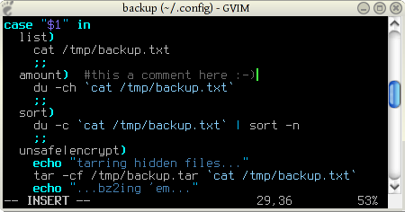

Fonts/typefaces are more part of our lifes than most of you think, they are virtually everywhere.
Today I was again deciding which fonts to use as my system fonts (on LCD), it is very difficult to choose wisely, so here are my top candidates: FreeSans (I like it), Arial (well, Microoftish, butnotthatbad, actuallyIuseditforquitealongtime), Verdana(alsoM, takes quite a lot of space but reads very nicely) and Gentium. Let me say more about the last one, as I started to really like it:
Gentium is kind of half-serif font (not really serif and not really sans-serif) which is very nice to look at, it also renders well on my screen. It is rather dynamic yet very well readable, and there is a reason Gentium is called “typeface for nations” – there is almost any char you could think of. Well, in case that wasn’t enough, have a look at a screenshot:

Nice, ain’t it? So that’s what I use in almost all applications now as a default font.
Then I’d like to mention terminus, that is the monospaced font. Suitable for day-long sessions in front of screen (believe me, I have tested it many times). I was very annoyed with Courier (New), Fixedsys and similar crappy fonts as their readability is awful. On the other hand terminus has wonderful readability and I got addicted to it very quickly. Here goes the screenshot:

Oh yeah, and vim rocks: no useless menus, only the info bar at the bottom… simple yet powerful :)
That’s about it, sorry for rather longish post (which should have been divided into two or three, I know) and for it being written in a hurry (working hard on a secret project ;-)).
PS: Some things I forgot: Terminus is a bitmap font, which is one of the reasons its readability is so good. It also contains all characters I need to use, and lastly, compare how mmmmm and iiiii has same width while it is both easy to read: